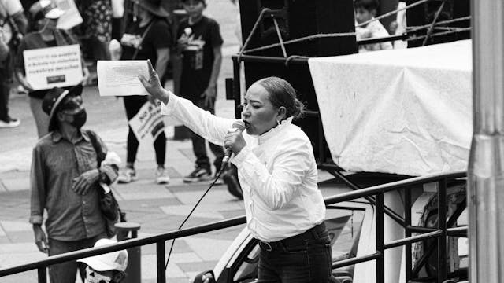
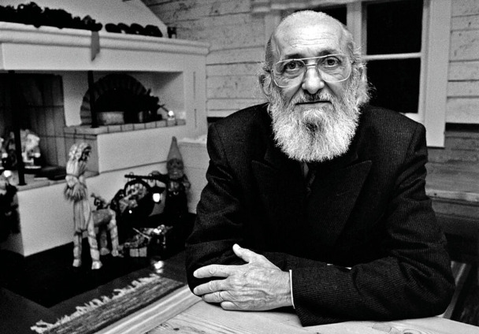
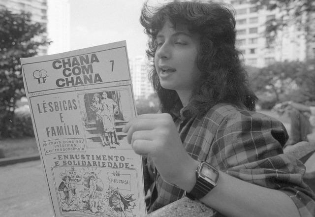
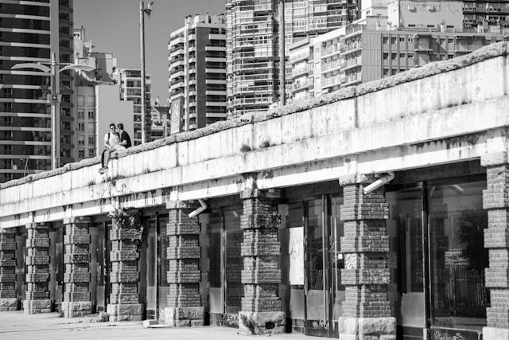

"Além de um ato de
conhecimento, a
educação é também
um ato político."
— Paulo Freire
 Ciências Humanas e SociaisEste eixo promove o pensamento crítico e a compreensão profunda das estruturas sociais e culturais. As formações aqui buscam interpretar o mundo e transformá-lo a partir de uma perspectiva ética, inclusiva e histórica.
Cursos: Filosofia, Sociologia, Antropologia, Estudos de Gênero e Sexualidade, História.
Direitos e Políticas Públicas
Voltado à formação de profissionais comprometidos com a democracia, os direitos humanos e a justiça social, esse núcleo prepara agentes transformadores para atuar em políticas públicas, legislação e participação cidadã.
Cursos: Direito, Políticas Públicas, Direitos Humanos, Advocacy e Cidadania Ativa.
 Educação e Formação Docente
Aqui, educar é um ato político. Os cursos desta área formam educadoras e educadores conscientes de seu papel social, aptos a construir práticas pedagógicas libertadoras, críticas e inclusivas.
Cursos: Pedagogia, Educação Popular, Psicologia Educacional, Metodologias Ativas.
 Comunicação e Cultura
A comunicação é entendida como ferramenta de resistência e visibilidade. Esta área investiga linguagens, narrativas e expressões culturais em seus aspectos políticos, midiáticos e artísticos.
Cursos: Jornalismo e Mídias Alternativas, Produção Cultural, Cinema e Documentário, Cultura Digital.
 Saúde Coletiva e Bem-Estar
Pensada de forma ampla e interseccional, esta área promove o cuidado integral com foco em saúde mental, equidade de gênero e direitos sociais.
Cursos: Psicologia, Serviço Social, Saúde da Mulher e Saúde Mental, Interseccionalidades em Saúde.
Pesquisa Interdisciplinar e Ativismo
Núcleo voltado à articulação entre pesquisa acadêmica e ação política. Incentiva investigações que dialogam com a realidade, os movimentos sociais e a memória das resistências.
Iniciativas: Núcleo de Estudos Lésbico-Feministas, Laboratório de Resistências Históricas, Nucleo de Estudos Anti-Racistas.